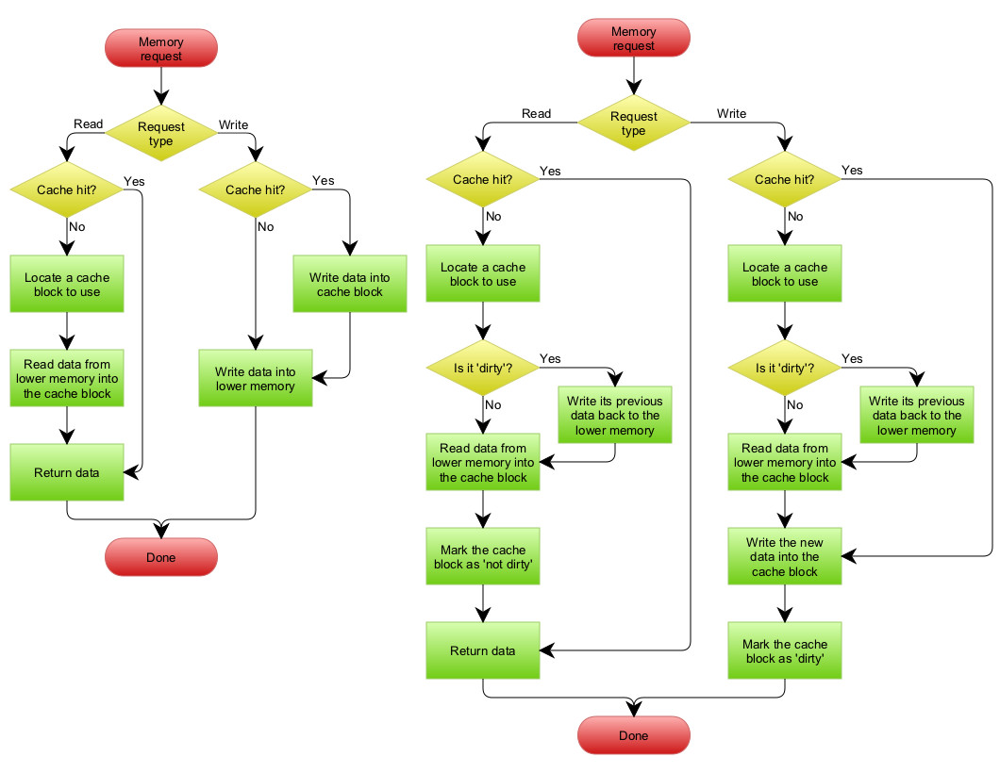

Masteroppgave
Master i Teknologi - Medieteknikk
30 ECTS
Avdeling for informatikk og medieteknikk
Høgskolen i Gjøvik, 2014
Evading Malicious Code with Concurrent Programming in Parallel Architectures and Their Protection Methods
| Caglar SAYIN |
Masteroppgave
Master i Teknologi - Medieteknikk
30 ECTS
Avdeling for informatikk og medieteknikk
Høgskolen i Gjøvik, 2014
Avdeling for
informatikk og medieteknikk
Høgskolen i Gjøvik
Postboks 191
2802 Gjøvik
Department of Computer Science
and Media Technology
Gjøvik University College
Box 191
N-2802 Gjøvik
Norway
Have you ever realize how secure and safe environment they claim in security product companies’ advertisement? Does Anti-Malware software really provide 100 percent security against Malware? As Everybody knows, It is not. Today, it is nothing more than cat and dog fight. Malware authors purpose an new architecture, an new approach and Anti Virus companies just try to fix vulnerabilities. Due to this fact, Parallel and concurrent architectures are elusive field for malware. They are new, trendy, popular, complex.
In this thesis, we will try to show vulnerabilities on concurrent and parallel cpu schedulers and non-uniform memory architecture. The weaknesses on hardware layer of the computer are hard to be observed by software solution. Therefore; It is time to pay attention for them, since it is not hard to predict that attackers will focus them.
This thesis purpose an offensive security approach, how malware can be evade autonomous malware detection systems, and also purpose and experimental method to detect and mitigate them.
I would like to thank Erik Hjelmås for encouraging me to write this small LATEX class for GUC’s master’s theses, and in particular for making sure that I will not be responsible for maintaining and supporting it…
~Virus don’t harm, ignorance does.~
- VxHeaven
The content of this document could be used in order to malicious purpose, but any matter or information could be misused in the life and ignorance is not known well as a defense strategy. In this purpose, this thesis aims to enlighten security specialist and system developers against recent way of the possible attacks.
However, in order to act ethical responsibility, we tried to eliminate practice of tools and piece of codes which could leads malicious usage. In any case, there is no doubt that it is critical to discover and publish vulnerabilities which could cause deep impact before malicious people discover and abuse them.
Ivar Farup, 2014/06/01
The purpose of introduction chapter is giving the readers blueprint of the subject, the problems that we face, the change in the solutions, as well as motivation of its importance. In addition, It also purpose to form proper research question which will guide thesis.
The thesis purposes an architecture of the malware which process parallel, access memory concurrently, conceal itself systematically, shortly that it is likely to be rocket science. However, everything actually started with a simple mathematical theory by John Von Neumann [1] and the first example of practical malware is written by Bob Thomas at BBN, and it was called Creeper
The malware is abbreviation of malicious software. It could be any piece of code which is defined malicious. There is no formal definition of malicious, it could be some software advertise without any contest or it could be self-producing code piece which aim to distribute itself and steal your private information, and it turned an arm race between power holders today.
With development of the first malware, their counter software are created and anti malware software have evolved with them so far. In this race, malware authors are always one step further, because of security’s nature. This race between black and white side raised the bar above. The motivation of the information amount and severity influence both today, and that information can be sometimes vital.
Security, Concurrent Malware Design, Malware, Multi-processing Architectures, Parallelism and Concurrency, Cache Oriented Polymorphism, Cache Coherency Problems
The one of the main and indecipherable problem in security discipline is formulating general threat definition and recognizing malicious activity and all this problems unsurprisingly reflect on information and computer security concept. Security is defined by system’s identification, which involve with purpose, crowd, design structures, network model and so on, and today’s information system which is designed with various architectural forms is protected against malware by general purpose protection tools. In the market, The anti malware tools producers focused on pragmatic solutions to survive, but it leads to that most of these tools are utterly reverse engineering process which works on result instead of reason.
With usual and pragmatic signature based methods, there are two mainstream techniques to detect malicious code which are called static and dynamic analysis.Static analysis identifies malware mainly with code flow graph and data flow graph on stored file which is not processing. However, On the dynamic side it is a bit more tricky to analyze process, because you are working on the running pieces of codes without knowledge of structures and worse than this, it must concern race condition and memory coherency flaws.
The detection methods and techniques have been adequately worked so far because of the simplicity of architectures and usage of the massive generic computers, However, with increasing of the not standardized, parallel and popular devices like arm’s SoC, it is not hard to estimate their new challenges. It is really likely to evade and obfuscate properly your on-the-fly processes with using uncertain characteristic of parallel processing, complexity of concurrent programming, and structure of “Non Uniform Memory Architecture~.
If malware designing is superficially considered, you could fall in usual fallacy that It is not beneficial and exactly opposite. However, if we can design it, there is always more skillful author who already abuse this vulnerabilities on the black side of the moon. The work we are obligated to actually proof this vulnerabilities and design counter measure against them. In this way, our blessed motivation is finding possible vulnerabilities, and mitigate or eliminate their risk. Otherwise; if we confront with unknown attack, it could be too late to fix and analyze it. For example, some of the most sensational and beneficial papers are criticize malware as same as the thesis ([2],[3],[4]), and their values are undoubted today.
This Master thesis is looking for better understanding on concurrent malware abilities and their counter-measure. Especially, It will try to show how possible to abuse concurrent memory accessing and how durable recent detection kits. It is quite unique work which we have to consider on the future. Ultimate goal is to eliminate any uncertainties which detection methods encounter with concurrent memory accessing.
This thesis will use a technical approach to the problem. It will use quantitative and model building approach. The methodology consist 8 circular step which are, asking question, building new hypothesis, planning methods, developing software, preparing generic testbed, testing, analyzing, reporting results. In addition to this, the large portion of the time will be given researching related topics, based architecture, and learning tools and technologies. Consequently, the accuracy of the thesis is lies on the proper scientific methodology.
circular diagram will be Drawn here
To address the first question, designing proper malware evasion technique with concurrent
and parallel architecture have not been researched well so for, therefore; it will lies on so much
experiment and we might have to reflection of other evasion and obfuscation attacks analogy.
We will chose several known malware, which is on air, to evade them during testing
part. We will strong probably use kernel modules and android operating systems
for testing bed, however we could linux OS without android layer to simplify and
closure test period. In testing step, we will use several anti-virus system such as Avast,
Comodo, Norton and compare the result before evasion and after evasion. Testing
period might me include mathematical proof depending on evasion or obfuscation
method.
Consider involvement of
this line during project.
Consider involvement of
this line during project.
At the end of the each hypothesis‘ result, which is mean the method for concealing malware,
will be reported properly. Each method will be another hypothesis, so we could be proof
whether multiple or none successful hypotheses, yet the failed hypothesis could be
crucial. There could be also many result which are too baroque to proof them or
explain their result, these cases could be observed on further work. For semantic
knowledge, we could try to show relationship between evasion methods and hybrid
approaches.
If we can find successful hypothesis for first question, we observe them in second question.
Second question is depend on the first question’s answer. Second questions methodology is
actually exactly same circular. It start with defense hypothesis against evasion method.
Dynamic and static detection methods must be both considered. The development of the
counter algorithms could be proved mathematically, but it can be quite baroque to formulate it.
In order to prove it, we could design evasion and detection methods‘ Turing model, however;
the main approach of our testing is involved with experimental solution. we will develop
planned algorithms prototype. Proper test bed could be provided with lots of malware species..
We will test our algorithms‘ prototype with concealed or obfuscated viruses. If it is really
necessary, we could prepare also control groups to prove trustworthiness of method,
then we have to record result without any intervention. For semantic knowledge, we
could try to show relationship between detection methods and hybrid approaches.
depending on the found
evasion technique,
methodology could be
shaped again
depending on the found
evasion technique,
methodology could be
shaped again
The last question is a matter of measuring and analyzing algorithms complexity. It is totally mathematical scientific methodology. We have to analyze worst, best and average complexity rate. There are also several Quantitative approaches like measuring resource usage. It could be efficient some system like network which there are lots of uncertainties in.
In this project, there five inevitable risks which we can face during development.
This section will give an overview of researches about Malware‘s self-defense technique, the methods to analyze them, and their application on concurrent architecture. This section will try to give the literature about malware evasion techniques. This techniques are generally antonym solution which are found by malware authors, however, there are enough surveys about known technique. We classified all these methods in six categories which are code obfuscation, code reuse, anti debugging, anti emulator and visualization and covert channel over network traffic. This taxonomy is well defined by Jonathan A.P Marpaung, et al [5], yet malware authors used them to protect their own properties.
Code obfuscation was originally found for protecting intellectual property[6], but It aims to puzzle code‘s binary against merely static analysis and disassembling[7]. The first known obfuscation method used encryption in order to hide its content. It was called Cascade which is seen first 1986[8]. This simple architecture of the obfuscation is called packing[9]. It involve with two part of binary which are slub part, in order to decipher and encipher.[5]. Cascade was using simple XOR encryption and that was increasing performance.
Early of the 1990s , oligomorphism and polimorphism started to show up[8]. The main idea behind them is basicly transforming their slub part in each attempt of encryption process[7]. Today, there are two type of polymorphic approach to generate different variants of slub.[10]
One of the other important milestone of polymorphic malware is Mutation Engine(MtE) is writen by a Bulgarian virus Author, called The Dark Avanger. It was automated obfuscation tool which actually considered impossible in those times.[11]
There are also several methods to prevent unpacking process. These methods are collected carefully by Peter Ferrie [12]. These methods are especially obstacle for automated analysis.
Compare with polymorphic methods, metamorphic approach is more complicated. It is transformation based method instead of encryption approach.[13] Fundamentally, it produce different codes which doing same blue printed semantic. That just mitigate detection possibility because of lack of static code.
Network traffic, which malware produce are generally Achilles heel for malware, because they are generally adequately unique traffics to be identified[5]. They usually cover their overt malicious traffic with covert channel methods.[14]
Code reuse attacks are strong attacks because they do not inject any code in them as obfuscation methods did. They aim to use legitimate software to evade themselves. There are there well known applied version which are return-into-libc, return oriented programming and Frankenstein.
Return into libc attacks were demonstrated by solar designer in 1997 as a method of bypassing non executable stack to executable libc libraries[15]. It’s object is to change the ~ret~ infrastructure argument to the known address possibly libc library(stdio, system, etc). However, this attack is limited with libc libraries, which we improved with return oriented programming.
Return oriented programming is more flex version of retur-into-libc attack, which is introduced by Shacham in 2007[16]. Return oriented programming purpose a programming language with small gadgets(instruction bound) which involve all ability of Turing’s machine[17]. Frankenstein is one of the novel application of return oriented programming by Vishwath Mohan and Kevin W. Hamlen[18].
Anti debugging and anti emulator methods are really usual for today’s malware. The survey of Chen Xu et al. showed us in 2008, majority of 6900 on-the-air malware could evade their self with exhibiting benign behavior in sandboxes, debuggers, and virtual machines.[19]. VM and debuggers are most important element of dynamic analysis techniques in autonomous sector, because it must run the file just before it touch the working environment. Yet, it is not that knotty to determine whether working environment is virtual or not. Fuzzing cpu bechmarks and comparing results entropy is a good way to determine virtual machines.[20]
Rootkits are the piece of malicious code which aims to crack integrity of the system state. The idea of the remaining invisible to the system state is traced backed one of the oldest virus ~Brain~[21]. It was changing the boot process and activate virus during booting. ~Tequila~ and ~1689~ viruses followed ~Brain~ in 1991 and 1993[22]. There are NTRootkit and HackerDeffender rootkits today. The proper classification of the rootkit are prepared by Adnan Abdakka[23].
Malware analysis medhods could be considered two dimensional plane which are ~anomaly, signature based detection technique~ and ~Statistic and dynamic analysis method~.
There are also several applied techniques, which combine terminology above.
Solely, a cache is a small, fast, array of memory which is placed between lower level memory and higher one. It store a special block of information, in order to increase performance of computer systems. It is like a buffer area which has some logic to exploit locality features of programming logic. Today, with increasing of processing ability of computer systems, memory access is bottle neck.
The ~cache~ is originally french rooted with meaning ~concealed place for storage.~[33] We can move this definition basically to the computer science. The cache’s design is definitely isolated from software layer, however; if you know your caches feature and how caches working you could program a lot more efficient codes easily.
The main motivation of caches is indisputably performance. As we mentioned, Performance of high-speed computers is usually limited by memory bandwidth and latency. In order to increase, and turn around that, we use an small array of memory which is located close to the processors. The location of chip is important and there are many design decision (e.g On chip, out of chip), but more crucial properties of caches are their designs (e.g. Naive Capacitor , SRAM, DRAM) and their logic complexity[34].Due to physical constrains, the size of the memory is limited which we can locate close to memory. On the other hand, these design choices are decisive factor about prices of memories. Because of all these reasons, Multi-Layer Memory Hierarchy with several caches between processor core and main memory is well-known option in order to improve performance. Nevertheless, In multilayer memory hierarchy, it is hard to know where the particular data reside in, and whether it is coherent or not. It also add many layer between memory and processor and in some cases it even decrease system performance,especially because of logical complexity of the line.
The idea all the caches logic depending on is Principle of Locality. Principle of locality is actually a concern of information theory[35]. It a conjecture of data distribution and processing order. The phenomenon assume that the the same data and related document will be accessed more frequently than other data[36]. Today, it is the one of the corner stone of computer science. It was first developed with Atlas System with purpose to develop virtual memory systems work well[37]. Then, it spread from search engines optimization to hardware caches.
There are mainly two type of locality of reference:
As we said in previous section, the basic logic behind caches is moving arranging caches with local data. In order to provide this feature as smooth as possible, we use a logic circuit called ~Cache Controller~. It does basic logic comparison and wiring the request and response into the right path. Thus, it intercept the write and read request from processor, replace its memory array with right scheduling method, and evict it safely and coherently. It processes with diving address of th request into three fields which are Index set field, tag field, and block field. In figure 2, these fields showed.
At the beginning of cache process after it divided address fields, It first request right cache line which is shown in figure 1. So if we have M byte memory and N byte cache line, we must have M∕N = cacheline, then we can represent it with p when cacheline = 2p Thus, cache controller just wire corresponding line with given set index.
In traditional cache convention, first field belongs to tag id. Tag id is determined depending on other field i.e. the remaining part after index field and block field calculated is tag id length. Tag id is using to verify the stored line is actually belongs to right location of memory. The cache controller has comparison circuit(XOR) and compare the requested address and the address which is in the pointed line by set index field. If they are matched with each other, then it check valid byte and hit or miss. There is a simple AND circuit between tag comparison.
Final field is called data index or block index field. It will point in the cache line the smallest addressable memory location. Therefore, when processor want to read a value, cache fetch the whole block, and that makes cache to exploit spacial locality linearly. However, it will limit the access speed remarkable, if we increase block size. The optimum block size is about 64 byte for many system. As we mention before each cache line includes cache-tag field, valid bit, dirty bit, and some coherency bits in some special systems. The length of the data index field is equal to r if wordsize = 2r.
When we increase the set index count it increase basically temporal locality, but not always. The cache conflict could happened when two memory location which uses same cache line could be used concurrently or twisted. Highly trashing can reduce cache performance. For this reason, associative caches are developed. Set associative caches are represented by their way number e.g 3 way associative caches or full associative caches, and there are group of cache arrays corresponding to the same set index. So that decrease the set index count but increase the performance during conflict miss in some cases. However, because of the complexity of the comparison circuit, it must be carefully chosen the number of ways. The associative caches are showed in figure 2.
The computer architecture we uses today actually first formulated by John Von Neumann [39]. On the first design of computer it was a single cycle instruction machine without any pipeline or superscalar idea. Then Hardward Mark I machine is designed with proposing two type of caches which are one for instruction, and one for data. Icache and Dcache are specified for their own purpose, because data and instruction on memories have different deterministic properties. Instruction are more tent to be linearly accessed by memory and they has branch locality which can be predict earlier. Icache also could be located more close to decode and fetch parts of processors when Dcache are instead closer to memory fetch parts. Yet, the most significant benefit of Harward design is concurrently usage both caches during pipelined architectures.
There are three policy type determine a cache behaviours. They are write policy, read policy and reallocate policy. System’s performance, coherency, and designs are determined depending on these rules.

[40]
Many modern computer systems with parallel processing ability have support of shared memory in hardware. Shared memory has lots of advantage over message based memory systems. Each processor could access same address space, read and write them simultaneously with using their own caches. This features has lots of benefit such as; low power consumption, higher performance and lower prices. However, without consistency between processors, parallel processing can not use many advantage of parallel programming. It could be also insecure to use a system without consistency between processors.
To provide better understanding of shared memory correctness, we defined it in two separate them in two definition, which are consistency and coherency. Consistency provide a definition of memory access rules and how they will act around computer system with store and load operations. When we compare it with coherency model, it must be more simple and easy to understand it. Therefore, it define a correct behaviours of the memory accesses of multiple threads by allowing or disallowing executions. On the other hand Coherency is a way of implementing a control protocol between memories and processors to support and provide consistency. Correct coherency provide a system which programmer or operator of the system can never determine behaviours (misbehaviours or correct behaviours) of caches[41].
As mentioned, Mention Consistency is try to define to correct shared memory behaviour between many processor in term of loads and stores. It does not have to concern specific hardware issues, such as hardware level pipelines, write buffers, caches, Out-of-order processing schemes etc. However, in the market, there is no hardware provide consistency perfectly, because the reordering store and load operations is regular optimization techniques in out-of-order processors. In addition to out-of-order processors, the multi layer memory architecture makes consistency vague and subtle. Yet, most of the programmers assume memories are completely consistent. There are several level between inconsistent and sequentially consistent memory.
Mention Consistency Application Summery.
Memory Coherency (a.k.a. Cache Coherency) is actually to impose a protocol between caches to provide a specific consistency model on shared memory systems. Unlikely consistency, it also concern hardware uncertainness and subtle part such as write buffer, pre-fetcher. Typical consistency protocol has features which include instruction caches, multiple-level caches, virtual-physical address transaction, and coherent direct memory access. However, it is not enough to ensure consistency(depending on consistency model) by itself. It tries to makes caches synchronization in shared memory systems invisible from software developer. However there are timing techniques to analysis cache architecture and coherency model of system.
In figure 4 and 5, the consistency issues on multi layer memory systems. Assume there is two cluster which has ability to process values with given instruction codes. LD and ST instruction refer to memory load and store request. In figure 4, there is a system with two caches which belongs each cluster and one shared memory block. x and y is represents a particular memory address. Contrast with figure 5, figure 4 uses write-back policy. In step 1, cluster A loaded x and y to the processor(it could be also pre-fetcher who load them to the cache block). In second step, somehow clusters stored 1 in memory location x and 10 in memory location y. In this step, memory is not consistent with memory but it is not hazard because they are not shared with cluster B. In step 3, caches evicted the block which include address x and later address x and y were loaded into the cache B. After this moment, they will never share the values which other cluster is actually using. Y was 10 at the end in the memory but it can’t be seen by cluster B, even if it try to read it a million times.
Write-through cache policy is intuitively perceived as solution of this problem, because it just write every values directly to the memory and it will be always synchronized with memory, yet it is not. In figure 5, write-through cache policy inconsistency showed. The problem with write-through policy, clusters use values which in their cache instead of memory, so even if memory is consistent with clusters, it is not consistent with each caches. In step 1 of figure 5, cluster A loaded x and y addresses into the its registers. Then, in step 2, cluster B loaded values of x and y addresses. In step 3, system got in inconsistent state, because cluster A write values through memory, but Cluster B uses the old values, and it will never reach never values, even if it try to load many times. For this reason, many of the large systems which has more than 64 core use this type of cache coherence.
In order to solve this problems, there are several coherency mechanisms and their protocols. Depending on the case and the number of cluster or processor in the system, system could use Snooping and Directory based mechanism. These each protocol have their own benefits and drawbacks. Snooping protocol is tent to use a lot of bandwidth, however, it is faster and more synchronous. Its logic is to broadcast each state to every node on the system. However, directory based mechanism work with request and response. There is interconnector to forward message to the right address and it makes directory based mechanism slower because of the increased latency, lighter because of the decreased bandwidth.
Snooping coherence (a.k.a. Bus Sniffing) is a technique to have caches to watch other processors caches and provide consistency depending on specified protocol. It basically implemented with external port to the system bus. Therefore, it implemented over cache controller which has feature to watch bus. It makes cache controller bigger and waste more power, so lower layer caches could use less complex coherency protocols and vice versa. There are many snoopy cache coherency protocol also depending on consistency model, but we can categorize them in two class which are Write update and write invalidate.
In this both protocol, we try to get rid of stall data which are in different caches, but it is provided with different logics. Write-update protocol is a broadcast write protocol that in every write attempt, it will write the values into the corresponding cache block but also it broadcast the write message to the every caches on the connected bus. Thus, everyone on the bus which has the ability of interpreting the message of write-update protocol will update stall values with new ones.
Secondly, Write-invalidate is whenever you write, you invalidate other cache copies and reduce to possibility usage of stall data. Instead of sending whole data block, it just send the tag number and state of the tag. It could effectively be successful, if you have limited bandwidth and power source. Most processor with coherency is today using write-invalidate protocol. However, it is efficient if there a few writer and many reader clusters or processors. Comparing with write-update protocol, if there is many writer, it could be less efficient because of invalidation process validate-invalidate-forward hops.[38]
There are many protocols for both write-invalidate and write-update to maintain coherence, such as MSI, MESI (aka Illinois), MOSI, MOESI, MESIF, write-once, and Synapse, Berkeley, Firefly and Dragon protocol. In this thesis, we will just focus on write-invalidate protocols because of their popularity, but basic principles are same as each other.
Mention Serialization of buses
| ∙ | Clean/Dirtiy | Write? | Unique? | Silent Transition to |
| Invalid | Clean | No | No | - |
| Shared | Clean | No | No | Invalid State |
| Modified | Dirty | Yes | Yes | - |
Basic write-invalidate snoopy cache control protocol is MSI (a.k.a Modified-Shared-Invalid protocol). In this model, each cache block has cache tag, and two status bit as same as standard caches, but instead of dirt and valid status bit, MSI cache line has state bits to refer in which state it is. MSI has three state in state machine and they are ~Modified~, ~Shared~, ~Invalid~. two bits can represent four state, so definitely represent three state. The main idea behind this protocol is that one writer and many reader states provide always consistent memory sharing. Therefore, every cache in the system has different responsibilities when they read or write.
In figure 6, MSI protocol’s state diagram is showed. Cache memory launch with invalid cache block, and when a read miss is comprised, cache controller will request memory block from memory. Then, the snooping control bus will broadcast the request of read. If there is a modified copy on the bus, it will abort request of memory block from memory. It will evict its line to memory, and change its state to shared state. Then, memory responds source of the request. After the fetching cache block to the source cache it, it sets the state as shared state. If there is a shared stated copies in the system, It does not matter who responds the request. In any case, It will fetch the memory block, and sets the state bits to shared.
When write miss is compromised in invalid state or shared, It will fetch the data as same as read miss cases, but the difference is it will invalidate other case’s corresponding block which are shared or modified. Modified stated block must evict blocks properly. At the end, source cache block fetches the block.
Write hit can be compromise in modified state, and read hit can be compromise in shared state.
The MESI protocol (a.k.a Illinois protocol due to its development at the University of Illinois at Urbana-Champaign) is a widely used cache coherency protocol[42]. The idea behind the MESI is to use forth state we can use with 2 bits. In order to increase efficiency exclusive state is developed by JH. Patel et. al. in 1984[42]. As showed in MSI protocol, there is modified, shared and invalid states but also we have exclusive state. This exclusive states also known unmodified exclusive state, if we refer modified state as modified exclusive. This is very similar to the shared state in MSI, and in fact, Shared state is split in two different states. That is because of reducing the communication on the bus and increasing efficiency. In this case, there is exclusive cache blocks which are in read mode and they are unique i.e there is no other cache controller on the system has this cache block.
| ∙ | Clean/Dirtiy | Write? | Unique? | Silent Transition to |
| Invalid | Clean | No | No | - |
| Shared | Clean | No | No | Invalid State |
| Excursive | Clean | No | Yes | Shared Modified Exclusive States |
| Modified | Dirty | Yes | Yes | - |
In figure 7, state transactions are showed. Bus usage is bottle neck, low performance behavior in cache coherency. Silent state transactions are transactions in cache controller without communicating with other caches. For example, there is no need to broadcast and occupy bus for invalidating shared state in MSI protocol. If a cache controller is in shared state, the other cache controller can be shared or invalidate in MSI, so there is no dependency in the system transaction from shared to invalidate. Exclusive state is to exploit the salient transactions. When a load request arrive to cache controller from a processor, it request the line from upper level memory controller and other child caches controller. If any child controller send a shared state broadcast message, it load it in shared state. If there is a exclusive cache controller on the bus, it will degrade its state to shared and broadcast it. If there is no other shared state on the bus. It load the cache line in excluded state. Then, in case of store operation from processor, it will transact its state from exclusive to modified. It does not need to broadcast it, because we know it is unique in system. Contrast with modified state, due to be cleanness of the line, it does not need to evict line to upper memory, it can just invalidate it silently. The weakness of this protocol comparing with MSI, if there is many processor with the corresponding cache line, when it count the copies to test uniqueness, it occupy shared bus more in some cases. If there is n cache controller with corresponding cache line, it will send n broadcast message with this message, however, instead of sending whole line to upper memory it is mostly efficient to send this message.
| ∙ | Clean/Dirtiy | Write? | Unique? | Silent Transition to |
| Invalid | Clean | No | No | - |
| Shared | Either | No | No | Invalid State |
| Excursive | Clean | No | Yes | Shared Modified Exclusive States |
| Owned | Dirty | No | Yes | - |
| Modified | Dirty | Yes | Yes | Owned |
Such processor producers AMD Opteron and Arm Cortex A are using MOESI protocol for cache sharing. In addition to the four states in MESI, a fifth state ~Owned~ appears here representing data that is both modified and shared. Using MOESI, instead of writing modified data back to main memory, it directly forward the dirty value from cache to cache before being shared, which could save bandwidth and gain much faster access to users to the cache.
In figure 8, state transactions of MOESI protocol are showed. The relationships of states are almost same with MESI, but there is a state which supplants upper level memory with its own cache line. Hence, it is responsible with evicting lines and cleaning state. The cache line may be changed to the Modified state after invalidating all shared copies, or changed to the Shared state by writing the modifications back to main memory. If could increase efficiency sharply, if the line between upper memory and itself is long and bandwidth is limited. Mostly the L1 and L2 caches are located on-the-chip, and memory are located somewhere outside, the buses’ bandwidth between in side and outside of chips are game changer. It can be efficient to use a chip as a forwarder in many system. However, in the MOESI protocol, it is not possible to forward the cache line which is not dirty but present on the chip. If there is a shared cache line in a cache, and if any other cache controller request to load the same cache line, it fetches it from memory.
Computer Bus which is the primitive version of the inter-connection network was designed to transfers data between components inside a computer, or between computers. They are defined to include all computer hardware components and software, included with communication protocols, in order to communicate devices. Devices is generally called as node or end node in taxonomy. However, this definition is quite broad and it covers from today’s Internet network to cloud computing network and evolved in many aspect to different direction.
In figure 9, There is an early multi-drop bus example. Multi-drop bus term is used for a bus line with many element on a line (not a ring), and there is an arbitration mechanism, so it is normal computer buses which is used in interconnection taxonomy. The multi-drop buses includes 5 separated wires which is distinguished by their purpose. Arbitration line decide actually how has right to speak, request. There is a logic devices to determine the arbitration and it is one of the most crucial research area in computer architecture and especially interconnector design[34]. Control wire is actually determine the purpose of the node. Generally, they are store and load operations. The address wire determine the requested address from corresponding place, in this case there is no cache controller so directly memory. Data wire carries the data which is stored or load, so the communication is synchronous, with consecutively request and reply. Lastly, clock wire provides a fixed, constant frequency to carry values.[34]
On recent systems the communication mechanism between nodes are quite more complicated comparing with given primitive example. The pace in the development on parallel systems makes correlation and communication between notes chaotic. Systems comprise with many nodes and requires high bandwidths to overcome and increase their bottleneck. Intercommunication is still the slowest part of mainframe and personal computers. On the other hand, with multi layer memory aspect, communication between nodes and parallel computing gets more and more complicated. It makes every cache controllers a member of interconnector and perhaps more. Today, there are some coherent interconnector which are also responsible with traffic management (i.e. QoS), barriers between devices and memories, and coherency[43].
There are two main category of computer interconnectors which are host based On-Chip and System/Storage area network and remote over LAN and WAN networks inter-connectors. On-Chip networks purpose to mitigate the on-flight latency and chip-crossing wire delay problems related with increased technology scaling and transistor integration. Nevertheless, there is not enough space in a single chip to fill many cores. It is a good design for interconnecting ALU, registers caches, compute tiles, and perhaps several cores and memory. System/Storage area networks are the most used interconnection systems between multi-processors, multi-computer, multi-thread systems and memory system interconnection between this cores. Because of physically constrains such as distance and density, it is usual the interconnector between systems and their I/O extensions (e.g DMA chips). LAN and WAN based systems are actually designed to connect enormous number of node together. This kind of networks distributed several locations and interconnecting PCs cluster of computers. Cloud computing is actually one of the good example to show the ability of this species. On of the other advantage of remote interconnectors is that they are generally build on well-known protocols which are tested and acknowledged protocols e.g. Ethernet, GSM, IP, TCP, UDP. All routing issues are tested for many years and solved properly.[34].
Modern interconnections with advance switching and routing mechanism are using message protocols. In figure 10, an example of simple interconnector message anatomy is shown. Alternatively, the bus anatomy we mention above, the message based protocols are packetized. However, this packetizing process has some overhead as latency[38]. Message anatomy of interconnectors comprises several layers[44].
In order to characterize interconnector device we will use several feature of networks which are switching mechanism, switching mechanism, routing algorithms, topology, and flow control of networks. These feature are determine depending on application domain and defuse all character of network. Across the designs, performance with latency and bandwidth parameters and queuing theory is the valuable analysis tools to define network and its classification[34].
put the quotes of interconnection networks appendix E questions here.
Topology is a mathematical study of shapes and the points and their relationships in the environment. Network topology is actually determining the path and shape of the network. The shapes which topology concerns depending on the dimension they are build on. Electronic circuit are generally build on two or tree dimensional space. The wire and nodes are the basic element of interconnector topologies, but also router is the switch element which can decide the path. The node could be grouped to regulate communication and bandwidth e.g. there could be two group as memories and processors. Also, there are two main type of network topologies, that are In-directly connected distributed and directly connected centralized. The root of ~central~ word in telecommunication comes from this switches, but they are too vast topics to discuss in this thesis. The basic idea of the centralizing topology is to use a central switching fabric between nodes. The switching fabrics is actually external subsystem or combination of systems, e.g omega and crossbar network topologies[44].
The general assumption of topologies is wire are faster then logical routers and transactions.-Today, there is in chip transaction devices which are faster then wires[34].- In order to design efficient topology, optimum cost and measure its quality, we have several parameters, which are diameter of tomography, routing distance, minimum bisection bandwidth and degree of a node.
The number of topologies designed in literature can be too many to count, but the idea behind them has always same logic. Topology directly effect performance, but also greatly impact the cost of systems. Physical constrains such as chips’ pin-out, light speed, dimension count on the board and etc. determine topologies properties. Generally chips are reducing their inner bandwidth, when they are communicating with out side of chip, due to the restriction of building pins[34].
 for meshes and 4
for meshes and 4 for
tori. The diameters are 2
for
tori. The diameters are 2 - 2 for meshes and
- 2 for meshes and  - 1. Degree of the network is
4(5 in some terminologies), and every nodes degree is same in the torus network
which can be seen in figure 12.[38]
- 1. Degree of the network is
4(5 in some terminologies), and every nodes degree is same in the torus network
which can be seen in figure 12.[38]
formalize the diameters, bisection bandwidth
formalize the diameters, bisection bandwidth and a bit more about fat tree
I could add figures about switching later also latency calculation formula could be attacked here or latency part.
Switching name root originally comes from circuits. It is complex combination of many circuits switch which actually connects conductors together. It determines in interconnection networks how data is allocated for data transmission, i.e. how and when the input channel will be connected to the output channel. Buffer states, channel flow, and surely routing algorithms effects the switching designs as we know so far from computer network design. To sum up, it is actually model how to connect different locations and nodes together[38].
Routing of the networks is actually provided by predetermined set of rules which draw the path of the packets they will follow on the network. Namely, routing algorithms determine the path over network topology with using switching mechanisms. If we look at the smaller picture, each intermediate router on the network determines which input ports are to connect to which output port. Some of the routing algorithms can complexly adapt their algorithms depending on the network condition i.e. they can monitor bandwidth and latency differences, compare them with demands and route depending on latest traffic, and some of the can simply choose random available path. However, there are two significant criteria of ideal routing: They should be deadlock-free, and they should give the shortest path.
Deadlock is more difficult to handle, and there are two common strategies are used in practice: avoidance and recovery[34]. Avoidance strategy determine deadlock stages and keep packets out of the path which include those stages or vice versa i.e. determining the clean states and routing over them. Instead of avoidance strategies, recovery strategies accept existence of the dead lock stages and have mechanism to detect likely existence of deadlock situation. In many cases avoidance and recovery strategies are using together.
We can simply categorize routing algorithms in two title: obvious and adaptive routing algorithms. Obvious routing algorithms are responding obvious rules repeated, yet adaptive one could change their decisions depending on the network condition. Obvious algorithms generally simple, and consequently, they are generally desirably quick and safe. On the other side, adaptive algorithms can check up the network overall and route packets depending on the current situation. Adaptive algorithms are preferable in huge networks like Internet[44], because adapting the path in response to non-uniform network traffics spread and normalize network bandwidth, but it is to much processing latency and power consumption for on-chip networks. Nevertheless, adaptive algorithms are what the market focused today esp. for wide area networks.
If an obvious algorithms are always giving the same path for each source-destination couple, it is called deterministic routing. Deterministic routing algorithms are simple way to avoid deadlock patters, but they consumes bandwidth without using many possible routes to aggregate traffic and reduce the contention. There are also non-deterministic algorithms to propagate network bandwidth all around the network, they just always use random way to route packets from source to destination. Also, there are algorithms to flood packets all around the networks to find fastest path to reach destination. It is called flooding routing.
Flow control internals define protocol for synchronization of sender and receiver nodes’ communication. with other words, it tries to prevent packet loss. It generally works on packet level, but there are some exotic examples of flit level flow control mechanisms. There are several situation can lead packet loss which are full buffers, busy output links, bandwidth issues, and faults, deadlocks, issues on link isolation, etc. The proper protocol must avoid packet loss and also recover lost packets on line. There are mainly two methods to synchronize flows in on-chip networks and each of them has advantages and disadvantages. They are On/Off with stall signal and credit based flow control mechanisms. Signalling mechanism could be useless because when receiver send a stall signal to sender, it could be too late to stop the flow for further transmissions, because when the receiver send stall message for implying that buffer is full, the further packets would be already sent. To solve this problem extra nodes and buffer could be used but there is no guaranty. On the other side, Credit-base systems needs more preconfigured knowledge between pairs. They should know their buffer space before start communication to use proper credit. If they use lower credit then proper, It will reduce bandwidth, if they use higher, it will increase packet loss. If there are more then one sender for receiver, credit base systems turns chaotic systems to implement. The pairs also compromise on the rate of packets in a period of time to reduce lost rate. For example, it could be problematic issue in heterogeneous systems which have many different processors with different processing abilities and frequencies.
Prepare latency section here and compare the performance and formulate latency and compare prices.